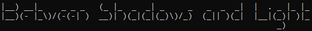
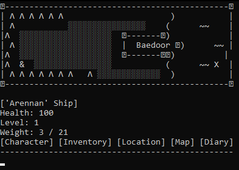

|
 |
|
Latest version: 1.0 Source code: GitHub |


Between Shadows and Light can be considered a first bigger game of mine, even though
it still was made playable only in terminal. It was also a first appearance of Baedoor
universe in digital form, with rules of BRPGS adjusted for limitations of computer game.
BSaL offered relatively open world for a text game, allowing player to become a hero
capable of fight, persuading NPCs, being a sneaky thief, or a trader. Despite short gameplay,
the game offered several activities, including sleeping, banking, crafting or even reading
magazine, letting players immerse themselves into the world.
History
First version of BSaL (now holding subname "legacy") came as a result of learning Python
language - as a project that was meant to pass the semester.
Second version (dubbed "rework") was made in two-three days on summer vacation - it was
an outcome of having free time in place where nothing has been happening, letting me
hyperfocus. It was much better technically, yet still not without issues. It can be
also seen the ambitious goals that this version held, for them to be cut due to lost
motivation. That said, this version already introduced enough features to be considered
fairly complete and advanced for what my skills were at the time.
The last step of BSaL history came with end of 2025, when I felt like BSaL deserved
some sort of remake in the perspective of Isle of Ansur game being still in development
hell. This ended up with me setting up new workspace and thinking naively I can sweep
the game during Christmas break.
The story has been different - despite indeed fast pace at the beginning, the last batch
of features became such grudge that the development itself stretched throughout several
months. That being said, after all ups and downs, it has been released on 1st July, and
with plans of three further versions to fix bugs, add some new content and further
translations.
Team
- Toma400 : lead